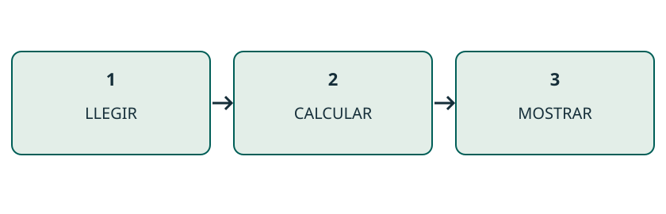
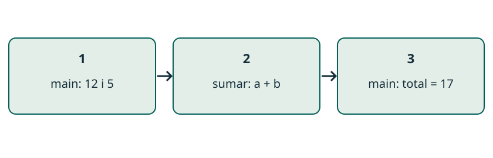
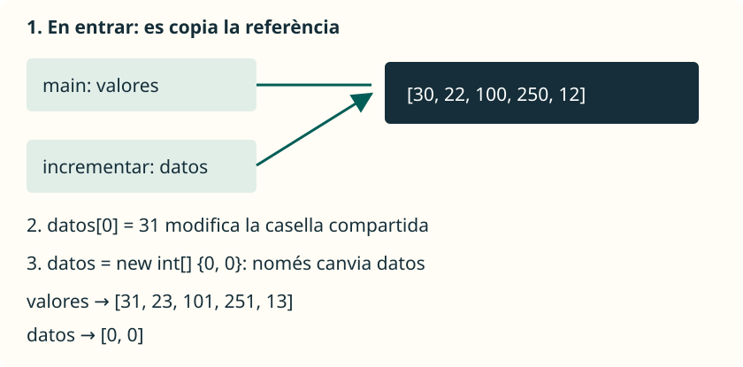

Funcions en Java
JAVA / EXEMPLE DESENVOLUPAT
Del programa llarg a tres tasques
Llegir, calcular i mostrar tenen responsabilitats diferents.
Partim de dos nombres ja llegits. Si barregem la suma amb l’eixida per consola, no podem reutilitzar el càlcul sense imprimir. Separarem les tasques per a poder cridar el càlcul des de main i, després, des d’un test.
Revelar el raonament
La part reutilitzable rep dos int i retorna un int. No necessita Scanner ni println.
int primero = 8;
int segundo = 5;
System.out.println(primero + segundo);
JAVA / MÈTODES
Dividir el treball
Un mètode dona nom a una tasca que podem reutilitzar.
Decidim quines dades rep, quina operació fa i quin resultat retorna. Així main pot coordinar tasques menudes.
int total = sumar(10, 5);
System.out.println(total); // 15JAVA / EXEMPLE DESENVOLUPAT
Dissenyar el contracte abans del cos
Sumar rep dos enters i entrega la seua suma.
El contracte descriu què pot esperar qui crida el mètode. Els paràmetres són les entrades; el retorn és l’eixida. Per a este exemple usem valors menuts amb un resultat que cap en int.
Revelar el raonament
EN PARAULES SENZILLES: entreguem dos nombres a una calculadora menuda i en recollim un. La pantalla la controla main.
static int sumar(int a, int b) {
return a + b;
}
// main:
int total = sumar(8, 5);
System.out.println(total); // 13JAVA / MÈTODES
Llegir una declaració
La capçalera explica com utilitzar el mètode.
static permet cridar-lo sense crear un objecte. int indica el resultat; els dos paràmetres aporten les entrades. El cos fa el càlcul.
public static int sumar(int a, int b) {
return a + b;
}JAVA / EXEMPLE DESENVOLUPAT
Què significa cada peça
La declaració pertany a la classe, fora de main.
public permet l’accés des d’altres classes; static permet cridar sense construir un objecte. int és el tipus retornat. sumar és el nom i (int a, int b) declara les dos entrades. Les claus delimiten el cos.
public class Calculadora {
public static int sumar(int a, int b) {
return a + b;
}
}JAVA / MÈTODES
Paràmetres i arguments
Els paràmetres es declaren; els arguments es proporcionen en cridar.
S’avalua 3 + 2 i es copia 5 en b. Els noms no han de coincidir: importa la posició i la compatibilitat de tipus.
int puntos = 12;
int total = sumar(puntos, 3 + 2);
// a = 12; b = 5; total = 17JAVA / EXEMPLE DESENVOLUPAT
Seguir les dades d’una crida
Cada argument s’avalua i s’assigna al seu paràmetre per posició.
En sumar(puntos, 3 + 2), primer obtenim 12 i 5. La nova crida té a = 12 i b = 5. El return calcula 17; només aleshores es completa l’assignació a total.
Revelar el raonament
1. Arguments: 12 i 5. → 2. Paràmetres: a = 12, b = 5. → 3. Càlcul: 17. → 4. main guarda total = 17.
int puntos = 12;
int total = sumar(puntos, 3 + 2);
JAVA / MÈTODES
Retornar no és mostrar
return entrega un valor al lloc de la crida.
El mètode calcula 7, però no escriu en consola. Per a mostrar-lo hem d’utilitzar println; també podem guardar el resultat o multiplicar-lo.
Veure l’explicació
La crida retorna 7, però el seu resultat es descarta. El mètode no conté println.
public static int sumar(int a, int b) {
return a + b;
}
// En main:
sumar(4, 3);JAVA / EXEMPLE DESENVOLUPAT
Usar el resultat en una altra operació
El valor retornat substituïx la crida dins de l’expressió.
sumar(4, 3) produïx 7. En la primera línia, eixe 7 es multiplica per 2. El mètode no decidix si guardem, imprimim o combinem el resultat: ho decidix qui el crida.
int doble = sumar(4, 3) * 2;
System.out.println(doble); // 14
System.out.println(sumar(1, 2)); // 3JAVA / MÈTODES
Una acció sense retorn
void indica que no es retorna cap valor.
Este mètode rep un nom i mostra una salutació. Es crida com una instrucció; no podem assignar el seu resultat a una variable.
public static void saludar(String nombre) {
System.out.println("Hola, " + nombre);
}
// En main:
saludar("Ana");JAVA / EXEMPLE DESENVOLUPAT
Detectar un retorn que falta
Un mètode int ha de retornar un int en tots els camins que acaben normalment.
Amb numero = 0, l’if no entra i este mètode arriba al final sense entregar cap valor. El compilador detecta el problema abans d’executar el programa.
Revelar el raonament
Per a entrades menudes: afig return numero; després de l’if. Amb nombres no negatius, eixe és el valor absolut.
static int absoluto(int numero) {
if (numero < 0) {
return -numero;
}
// Error deliberat: falta un return.
}JAVA / MÈTODES
Entrar i tornar
main espera el resultat abans de completar l’assignació.
Primer s’entra en sumar amb a = 2 i b = 3. return entrega 5. Després main guarda eixe valor en total i el mostra.
// main → sumar → main
int total = sumar(2, 3);
System.out.println(total); // 5JAVA / EXEMPLE DESENVOLUPAT
Un programa complet que podem executar
main coordina; sumar fa el càlcul.
Guarda este codi com ProgramaSuma.java. L’execució comença en main, salta a sumar i torna a l’assignació. La declaració de sumar no s’executa per estar escrita abans o després: cal una crida.
public class ProgramaSuma {
public static void main(String[] args) {
int total = sumar(8, 5);
System.out.println(total); // 13
}
static int sumar(int a, int b) {
return a + b;
}
}JAVA / MÈTODES
Cada crida té les seues variables
Una variable local pertany al seu bloc; un paràmetre, a la seua crida.
numero continua sent 10. valor rep una còpia i resultado només existix dins de duplicar. Per a comunicar el càlcul usem return.
public static int duplicar(int valor) {
int resultado = valor * 2;
return resultado;
}
// En main:
int numero = 10;
int doble = duplicar(numero); // 20JAVA / EXEMPLE DESENVOLUPAT
L’àmbit seguix les claus
Una variable declarada dins d’un bloc no es pot usar fora.
L’if crea un bloc interior. total només existix allí, encara que la condició siga true. Per a usar-lo després, declara’l abans de l’if i assegura’t d’assignar-li un valor en tots els camins.
Revelar el raonament
Error de compilació: total no està en l’àmbit de println. No s’arregla fent public una variable local.
if (true) {
int total = 5;
}
System.out.println(total);JAVA / MÈTODES
Copiar un valor primitiu
Canviar el paràmetre no reassigna la variable de qui fa la crida.
calcular treballa amb la seua pròpia variable valor. En sumar-li 50 canvia la còpia, mentre numero conserva 10.
Veure l’explicació
Es mostra 10: l’argument s’ha passat per valor.
public static void calcular(int valor) {
valor += 50;
}
// En main:
int numero = 10;
calcular(numero);
System.out.println(numero);JAVA / EXEMPLE DESENVOLUPAT
Recollir el canvi amb return
Si necessitem canviar numero, hem d’assignar el resultat.
Sumar 50 a un paràmetre local no modifica numero. Esta versió retorna el nou valor i main el recull. L’assignació de l’última línia és la que canvia la variable de qui fa la crida.
static int aumentar(int valor) {
return valor + 50;
}
// main:
int numero = 10;
numero = aumentar(numero); // 60JAVA / MÈTODES
Arrays: compartir l’objecte
També es copia la referència a un array.
Dos variables diferents permeten accedir al mateix array. Modificar una casella canvia eixe objecte compartit; reassignar el paràmetre només canvia la còpia de la referència.
datos[0] = 31;
datos = new int[] { 0, 0 };
JAVA / MÈTODES
Observar les referències
Seguix per separat la variable i l’array al qual permet accedir.
Avança per un exemple fix. Primer es modifica l’array inicial; després el paràmetre apunta a un altre array. Tornar a main permet observar què ha canviat.
Activa JavaScript per a recórrer la traça; el codi permet estudiar l’exemple complet.
int[] datos = { 3, 7 };
cambiar(datos);
// cambiar(int[] valores):
valores[0] = 10;
valores = new int[] { 20, 30 };
valores[1] = 40;main: datos → [3, 7]; en tornar → [10, 7].
Simulació d’un exemple fix; no executa Java.
JAVA / EXEMPLE DESENVOLUPAT
Retornar un array nou
Crear una còpia permet conservar les dades d’entrada.
Reservem un array de la mateixa longitud i hi escrivim. Per a {2, 5} retornem {3, 6}; l’original continua amb {2, 5}. Açò serà important en provar efectes amb JUnit.
Revelar el raonament
Precondició: datos no és null i els increments caben en int. Si està buit, el bucle no entra i retorna un altre array buit.
static int[] crearIncrementado(int[] datos) {
int[] copia = new int[datos.length];
for (int i = 0; i < datos.length; i++) {
copia[i] = datos[i] + 1;
}
return copia;
}JAVA / EXEMPLE DESENVOLUPAT
String: rebre i retornar text
Reassignar un paràmetre String tampoc canvia la variable original.
String és immutable: toUpperCase retorna text i no modifica la cadena original. Dins de gritar, texto passa a referenciar el resultat. main conserva la seua referència fins que assignem el valor retornat.
static String gritar(String texto) {
texto = texto.toUpperCase();
return texto;
}
// main:
String nombre = "Ana";
String fuerte = gritar(nombre);
// nombre: "Ana"; fuerte: "ANA"JAVA / MÈTODES
Sobrecàrrega: triar una signatura
Un nom pot representar operacions amb paràmetres diferents.
La signatura es distingix pel nom i els tipus dels paràmetres en ordre. Canviar només el tipus de retorn o el nom del paràmetre no crea una altra signatura.
static int sumar(int a, int b) {
return a + b;
}
static double sumar(double a, double b) {
return a + b;
}
// sumar(2, 3) → 5
// sumar(2.5, 3.0) → 5.5JAVA / EXEMPLE DESENVOLUPAT
Quina sobrecàrrega tria Java
Els tipus dels arguments determinen quina signatura s’utilitza.
Amb dos int es tria sumar(int, int). Amb dos double es tria sumar(double, double). La variable que recull el resultat no crea una sobrecàrrega: canviar únicament el retorn no permet declarar dos mètodes iguals.
Revelar el raonament
En la tercera crida, 2 es convertix a double. No hi ha una conversió automàtica de 3.0 a int per a triar l’altra signatura.
sumar(2, 3); // int, int
sumar(2.5, 3.0); // double, double
sumar(2, 3.0); // double, doubleJAVA / MÈTODES
Quantitat variable d’arguments
int... s’utilitza com un array dins del mètode.
Només pot haver-hi un varargs i ha de ser l’últim paràmetre. Sense arguments es rep un array buit; també es pot passar un array existent.
static int sumar(int... numeros) {
int total = 0;
for (int numero : numeros) {
total += numero;
}
return total;
}
// sumar() → 0; sumar(1, 2, 3) → 6JAVA / EXEMPLE DESENVOLUPAT
Varargs: de l’argument a les caselles
sumar(4, 6, 2) treballa amb un array de tres elements.
En el mètode varargs, numeros.length val 3. L’acumulador comença en zero i canvia a 4, 10 i 12. Amb sumar() la longitud és zero i el resultat queda en zero. Estudiem este mètode per separat de les sobrecàrregues anteriors.
// Traça de sumar(4, 6, 2):
// numeros = [4, 6, 2]
// total = 0 → 4 → 10 → 12
int[] datos = {4, 6, 2};
int total = sumar(datos); // 12JAVA / MÈTODES
Recursió: reduir el problema
Un mètode recursiu es crida a si mateix amb un problema més menut.
El cas base retorna 1 per a zero. Cada crida resta un, de manera que les entrades permeses arriben al cas base. Usem long i admetem de 0 a 20.
static long factorial(int numero) {
if (numero == 0) {
return 1L;
}
return numero * factorial(numero - 1);
}JAVA / MÈTODES
Descendir i tornar
Les multiplicacions esperen que acaben les crides interiors.
Avança des de factorial(3) fins al cas base. Després observa els retorns: 1, 1, 2 i 6. Cada crida conserva el seu propi numero.
Activa JavaScript per a recórrer la traça; el codi permet estudiar l’exemple complet.
factorial(3)
= 3 * factorial(2)
= 3 * (2 * factorial(1))
= 3 * (2 * (1 * factorial(0)))
= 6factorial(0) → 1; factorial(1) → 1; factorial(2) → 2; factorial(3) → 6.
Simulació d’un exemple fix; no executa Java.
JAVA / EXEMPLE DESENVOLUPAT
Recursió: dos formes de no acabar
Cal un cas base assolible i avançar cap a ell.
Cridar una altra vegada amb numero no reduïx el problema. Cridar amb un negatiu i restar un ens allunya de zero. En els dos casos s’acumulen crides fins a esgotar la pila; no els executes com si foren exemples correctes.
Revelar el raonament
Comprovar el contracte abans de cridar. Per al factorial amb long, 20! cap i 21! ja supera el seu rang. Un bucle evita les crides imbricades, però no evita el desbordament.
// Error deliberat: no reduïx el problema
return numero * factorial(numero);
// En la versió correcta, admetre només 0..20.JAVA / MÈTODES
Triar i comprovar
Un mètode ha de tindre una responsabilitat i entrades ben definides.
Prova dades normals i límits. Per a factorial, compara recursió i bucle amb 0, 1, 6 i 20. Un cas base sense reducció del problema no garantix que acabe.
Veure l’explicació
El bucle no entra i es retorna -1: el valor no apareix. L’array ha de ser no nul.
static int buscar(int[] datos, int buscado) {
for (int i = 0; i < datos.length; i++) {
if (datos[i] == buscado) return i;
}
return -1;
}